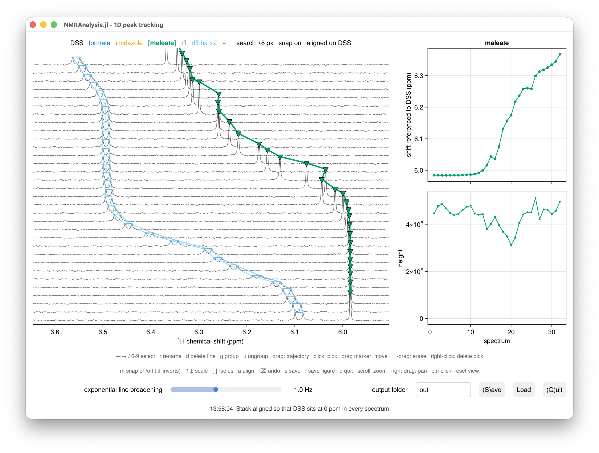
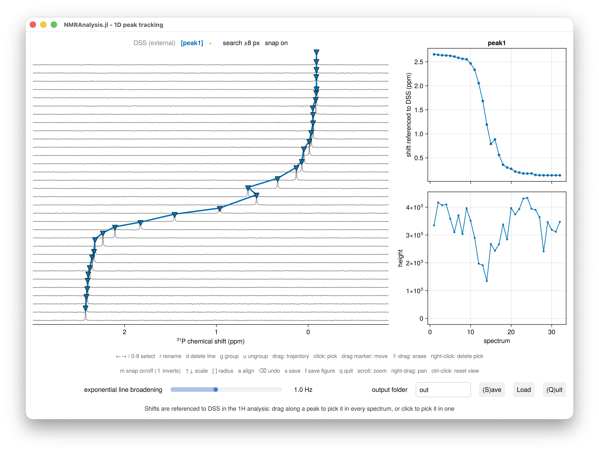

Peak tracking
peaktrack1d follows the chemical shifts of peaks across a series of 1D spectra: a pH or temperature series, a titration, or anything else where signals move from one spectrum to the next. It draws the spectra as a stack, and you pick each peak by painting along its trajectory with the mouse. A peak can be a singlet or a multiplet of several lines, and one peak serves as the chemical shift reference.
Unlike the other 1D routines, peaktrack1d measures positions rather than integrals, and fits nothing: the shifts are the result.

Run the analysis
Call peaktrack1d with your experiment numbers:
using NMRAnalysis
p = peaktrack1d(11:16)The window stays open until you close it, and peaktrack1d then returns the analysis. A line at the foot of the window confirms each thing you do, such as saving or aligning, and shows warnings and errors in red, since the REPL is usually hidden behind the window.
Choose how the spectra are processed
By default, peaktrack1d processes the raw data itself, so it doesn't depend on how the spectra were processed in TopSpin. It phases every experiment automatically, and a slider under the plot sets the exponential line broadening, which you can narrow to separate overlapping lines while you pick.
To use the spectra processed in TopSpin instead, pass process=false:
p = peaktrack1d(11:16; process=false)You can also pass spectra you have already loaded with NMRTools, either processed or as FIDs from loadfid.
When processing, phase controls the phase correction:
phase | Phases used |
|---|---|
:auto (default) | found automatically for each experiment |
:pdata | PHC0 and PHC1 from each experiment's processed data |
a vector of (p0, p1) pairs | the ones you give, in degrees |
a path to processing.csv | the ones saved by an earlier analysis |
In a series of three or more experiments, peaktrack1d checks the phases against each other and corrects any that stand out:
- First-order phase comes from the acquisition rather than the sample, so it should barely change along a series. One far from the series median usually means one line was phased correctly and another wrongly. It is set to the median and the zero-order phase fitted again (
refit). - Zero-order phase varies a little from sample to sample, but one more than 45° from the rest of the series means automatic phasing settled on the wrong answer, which can happen when a spectrum's only line is broadened, near a pKa for example. It takes the zero-order phase of its neighbours in the series (
neighbours). - No phase at all, when no line is strong enough for automatic phasing: the zero-order phase is fitted at a lower signal-to-noise threshold (
refit), or taken from the neighbours.
The REPL reports each experiment it corrects, and the phasing column of processing.csv records how each experiment was phased. Pass the spectra in series order, since neighbours are taken from that order.
Pick a peak
The status line above the plot lists the peaks. The current peak is in brackets; the reference comes first, and a + at the end is the vacant slot for a new peak.
- Select a peak with
←and→, or with the number keys, where0is the reference. The window opens on the first peak, or on the+slot if there are none yet. To start a new peak, move to the+at the end. - Drag along the peak's trajectory through the stack. In each spectrum the brush crosses, the tallest peak inside the shaded area is picked.
- Correct individual spectra: click to pick the spectrum under the cursor, drag a marker to move it, or right-click a marker to delete it. Shift-drag erases picks under the stroke.
- Press
r, type a name and press enter. A name can't contain an underscore or a comma: an underscore becomes a hyphen, and a comma is dropped.
If a strong neighbour is picked instead of your peak, narrow the brush with [. If two lines overlap so that no maximum separates them, press m to turn snapping off and place the picks by hand.
Check the series as you pick
The panel to the right of the stack plots the current peak against your first coordinate, or against spectrum number if you gave none: its shift above, and the height of each line below, on an axis that always includes zero. It follows the selection, so step through the peaks with ← and → to check each one, and it updates as you edit. Shifts are referenced once the reference is picked in every spectrum and shown as measured until then; the axis label says which. A spectrum with a missing pick shows as a gap.
Say what the spectra are
Spectra are numbered 1, 2, 3 and so on. To have the summary panel and the output files use what distinguishes them instead, such as pH, pass one value per spectrum:
p = peaktrack1d(11:16; coordinates="pH" => [5.5, 6.0, 6.5, 7.0, 7.5, 8.0])Pick a multiplet
Pick each line of the multiplet as a separate peak, then group them:
- Pick the first line, and name the peak.
- Move to the
+slot and pick the second line. - Press
g, then click any marker of the first line. The second line joins the first line's peak, and keeps its name.
A grouped multiplet shows a bar across its lines in each spectrum, with a tick at its centre and a dashed line joining the centres. Its chemical shift in each spectrum is the mean of its lines, which is the centre of any symmetric first-order multiplet. A spectrum in which one of the lines is missing has no centre, rather than a biased one.
Press u to move the current line back out into a peak of its own, or d to delete it. The left and right keys step through every line of a multiplet in turn.
Reference the shifts
The first peak, shown in black, is the reference. Select it with 0, pick it like any other peak, and press r to give it its name, such as DSS. Once it is picked in every spectrum, press a to align the spectra so that the reference sits at 0 ppm. Alignment changes only the display. The shifts are always stored as measured, and the output gives each centre referenced as well.
While the spectra are aligned, the reference can't be edited; press a again first.
Reference other nuclei to DSS
To put ¹⁹F or ³¹P shifts on the same footing as ¹H, analyse the ¹H spectra first with DSS picked, then pass that analysis as the reference for the other nucleus:
h = peaktrack1d(11:30)
f = peaktrack1d(31:50; reference=h) # ¹⁹F
p = peaktrack1d(51:70; reference=h) # ³¹PThe ¹⁹F and ³¹P shifts are then referenced indirectly to DSS on the IUPAC unified scale: the zero of each nucleus is its Ξ ratio times the ¹H frequency of DSS, measured in the matching ¹H spectrum. That puts ¹⁹F on the CFCl₃ scale and ³¹P on the H₃PO₄ scale, with the Ξ ratios NMRTools holds. Because each spectrum's own reference frequency enters the calculation, it doesn't matter how the spectra were referenced when they were processed.
Pass the spectra in matching order: the first ¹⁹F spectrum is referenced with the first ¹H spectrum, and so on. peaktrack1d stops with an error if the number of spectra differs, or if a spectrum was recorded at a different field from its ¹H partner. In the window the reference is shown greyed and marked external: it can't be selected or picked, since DSS comes from the ¹H analysis, but a aligns the stack and the summary panel shows referenced shifts as usual.

Save and reload
Press Save or s to write the output folder named in the box beside it, out by default. Press Load to restore the picks saved there. To carry on from a saved analysis in a new session, or on reprocessed data:
p = peaktrack1d(11:16; peaklist="out/peaklist.csv")To reopen the window on an analysis you still have, pass it back:
p = peaktrack1d(p)Use the results
Show p in the REPL for a table of the centre of every peak in every spectrum. To paste the shift of every line into a spreadsheet, run:
clipboard(p)This copies what referencedshifts.csv holds once the reference is picked, and what shifts.csv holds before then.
planeresults(p) gives every line in every spectrum as a vector of named tuples, the same content as series.csv.
Press f in the window to save a publication figure of the region currently shown, at a single journal column's width, in the output folder. If you haven't saved the analysis to that folder yet, f saves it first, so the figure always sits with the analysis it shows. Each later Save copies your figures into the new folder. For more control, draw the figure with stackplot and save it with CairoMakie:
using CairoMakie
save("stack.pdf", stackplot(p; size=(500, 340)); backend=CairoMakie, pt_per_unit=1)Output files
| File | Contents |
|---|---|
summary.txt | the processing, the reference, each peak's range of shifts, and the call that repeats the analysis |
peaklist.csv | every pick as placed: what Load and peaklist read |
series.csv | every line in every spectrum: its shift, height and signal-to-noise ratio, and its peak's centre and referenced shift |
shifts.csv | the shift of every line as measured, one row per spectrum and one column per line |
referencedshifts.csv | the same, referenced to the reference at refshift; written once the reference is picked in any spectrum |
heights.csv | the height of every line, in the same layout |
processing.csv | the phases, line broadening and zero-filling, when peaktrack1d processed the data |
stack.pdf | the region shown in the window |
figure-<date>-<time>.pdf | the figures you saved with f |
peaks/ | one CSV and one plot of shift against the first coordinate for each peak |
In series.csv, each line is identified by its peak's label, its line number (counting from the highest shift) and the plane. The centre (ppm) and referenced (ppm) columns describe the whole peak, so they repeat down its lines.
The three wide files are the ones to open in a spreadsheet or plot from. Their first columns are plane and your coordinates. A singlet's column is named by its label, and the lines of a multiplet by its label and line number, MOPS[1] and MOPS[2], counting from the highest shift. A blank pick is NA.
A height is the intensity at the line's maximum, divided by the number of scans and the receiver gain, and by the sample concentration where one is recorded (NMRTools' scale), so that spectra recorded with different settings compare. It is a height, not an integral or an amplitude: when a line broadens, as it often does near a pKa or the midpoint of a titration, its height falls even though nothing has been lost.
Keys
| Key | Action |
|---|---|
← → | previous or next line |
0 to 9 | select a peak; 0 is the reference |
r | rename the current peak |
g, then click | join the clicked line's peak to the current one |
u | move the current line into a peak of its own |
d | delete the current line |
a | align the spectra to the reference |
m | snapping on or off; shift inverts it while held |
↑ ↓ | vertical scale |
[ ] | brush and search radius |
backspace | undo |
s | save the analysis to the output folder |
f | save a figure of the region shown, in the output folder |
q | quit |
Scroll to zoom the chemical shift axis, right-drag to pan, and ctrl-click to reset the view.